Chapter 25: Comparing¶
comparatif et superlatif
Bigger, cheaper, as good as, the best, more and more — we compare all day long. French does it with three small words, plus, moins and aussi, and one partner, que. Add a few irregular forms — meilleur, mieux, pire — and you can compare anything.
- 1Comparing adjectives: plus, moins, aussi … que
- 2Adverbs, nouns and verbs: autant and autant de
- 3The irregulars: meilleur, mieux, pire
- 4The superlative: le plus, la moins, les meilleurs
- 5More and more, the same, the more … the more
- 6In real life: choosing a flat
masculinefeminineplural
In one line
plus / moins / aussi + adjective + que: Paris est plus cher que Lyon. — more / less / as … as.
- Le TGV est plus rapide que la voiture. — The TGV is faster than the car. [plew ra-PEED kuh]
- Ce film est moins drôle que le premier. — This film is less funny than the first one. [mwɛ̃ DROL]
- Ton français est aussi bon que le mien ! — Your French is as good as mine! [o-SEE BÕ kuh]
25.1 Comparing adjectives: plus, moins, aussi … que¶

The adjective agrees with the first thing — the subject — as always:
- Ma sœur est plus grande que moi. — My sister is taller than me. [plew GRÃD kuh MWA]
- Les fraises sont moins chères au marché. — Strawberries are cheaper (less expensive) at the market.
- Ce restaurant est plus‿intéressant que l’autre. — This restaurant is more interesting than the other one. [plew-zɛ̃-tay-ray-SÃ]
- Il fait aussi chaud à Delhi qu’à Chennai en mai ? — Is it as hot in Delhi as in Chennai in May?
After que: a stressed pronoun¶
If you compare with a person, use moi, toi, lui, elle, nous, vous, eux, elles after que (see Object pronouns). Before a vowel, que becomes qu’.
- Il est plus âgé que toi ? — Is he older than you?
- Nous sommes aussi fatigués qu’eux. — We are as tired as they are. [kuh]
Careful
- Wrong: Elle est plus grande que je.
- Right: Elle est plus grande que moi.
- Why: Je must be followed by a verb. After que with no verb, use the stressed pronoun moi.
Careful
- Wrong: Il est plus grand de moi.
- Right: Il est plus grand que moi.
- Why: “Than” is always que — never de (and not comme, which means “like”).
Not as … as
In the negative, aussi often becomes si: Ce n’est pas si difficile que ça. — It’s not as hard as that.
25.2 Adverbs, nouns and verbs: autant and autant de¶
The same three words work with adverbs too:
- Tu peux parler plus lentement, s’il te plaît ? — Can you speak more slowly, please? [plew lãt-MÃ]
- Elle court plus vite que son frère. — She runs faster than her brother.
- On sort moins souvent qu’avant. — We go out less often than before.
With a noun (how much / how many), add de: plus de, moins de — and equality becomes autant de. With a verb (how much you do something), put plus, moins, autant after the verb.
| Compare… | more | less | as much / as many |
|---|---|---|---|
| adjective / adverb | plus … que | moins … que | aussi … que |
| noun | plus de … que | moins de … que | autant de … que |
| verb | verb + plus que | verb + moins que | verb + autant que |
- J’ai plus de travail que l’année dernière. — I have more work than last year. [plews duh / plew duh]
- Il y a moins de monde le mardi. — There are fewer people on Tuesdays.
- Elle a autant d’amis que toi. — She has as many friends as you. [o-tã da-MEE]
- Mon père travaille plus que moi, mais il dort autant que moi. — My father works more than me, but he sleeps as much as me.
aussi or autant?
aussi + adjective/adverb (aussi grand). autant + verb, autant de + noun (il mange autant, autant de pain).
Careful
- Wrong: J’ai aussi de livres que toi.
- Right: J’ai autant de livres que toi.
- Why: With a noun, equality is autant de. Aussi is only for adjectives and adverbs.
Careful
- Wrong: Il y a plus des voitures qu’avant.
- Right: Il y a plus de voitures qu’avant.
- Why: After quantity words (plus, moins, autant, beaucoup, trop), it is always plain de.
With a number, “more than” is plus de: Il a plus de trente ans. (He is over thirty.)
25.3 The irregulars: meilleur, mieux, pire¶
English has “better” and “best”; French has two words for “better”, depending on what it describes. Bon (good, an adjective) becomes meilleur. Bien (well, an adverb) becomes mieux.
| Basic | Comparative | Superlative |
|---|---|---|
| bon (good — adj.) | meilleur(e)(s) [may-YUHR] | le / la / les meilleur(e)(s) |
| bien (well — adv.) | mieux [MYUH] | le mieux |
| mauvais (bad — adj.) | plus mauvais / pire [PEER] | le plus mauvais / le pire |
| mal (badly — adv.) | plus mal | le plus mal |
- Ce café est meilleur que l’autre. — This coffee is better than the other one. (describes the coffee → meilleur)
- Les mangues d’Inde sont meilleures ! — Indian mangoes are better! (meilleur agrees: meilleures)
- Tu chantes mieux que moi. — You sing better than me. (describes how you sing → mieux)
- Ça va mieux aujourd’hui ? — Are you feeling better today? [sa va MYUH]
- La situation est pire qu’hier. — The situation is worse than yesterday.
meilleur or mieux?
Describing a thing or person (a noun) → meilleur (agrees). Describing how an action is done (a verb) → mieux (never changes).
The famous errors
- Wrong: Ce gâteau est plus bon.
- Right: Ce gâteau est meilleur.
-
Why: Plus bon does not exist (just as English has no “gooder”). Moins bon, however, is correct.
-
Wrong: Il parle français meilleur que moi.
- Right: Il parle français mieux que moi.
-
Why: You describe how he speaks (a verb) → mieux. Compare: Son français est meilleur que le mien.
-
Wrong: C’est plus bien comme ça.
- Right: C’est mieux comme ça.
- Why: Bien → mieux. With c’est + a judgment (a better idea, a better situation), French says c’est mieux.
25.4 The superlative: le plus, la moins, les meilleurs¶
To say “the most / the least”, put le, la or les before plus or moins. The article agrees with the noun. To say “in” the group, use de.
- C’est la plus belle ville du monde. — It’s the most beautiful city in the world. [la plew BɛL VEEL]
- Paul est le plus jeune de la classe. — Paul is the youngest in the class.
- Ce sont les chaussures les moins chères du magasin. — These are the cheapest shoes in the shop.
- C’est la meilleure pizza que j’aie jamais mangée ! — It’s the best pizza I’ve ever eaten! (after a superlative, French uses the subjunctive: j’aie)
Careful
- Wrong: le plus grand pays dans le monde
- Right: le plus grand pays du monde
- Why: English says “in the world”; French says “of the world”: de (+ le → du).
Position: where does the adjective go?¶
The superlative keeps the adjective in its normal place. Most adjectives go after the noun — and then the article appears twice. The short “BAGS” adjectives (beauty, age, goodness, size: beau, jeune, bon, grand, petit…) go before the noun. See Adjectives.

- C’est le quartier le plus animé de Mumbai. — It’s the liveliest district in Mumbai.
- Voici notre plus petite chambre. — Here is our smallest room. (a possessive replaces the article)
Careful
- Wrong: C’est la ville plus intéressante.
- Right: C’est la ville la plus intéressante.
- Why: Without the second la, the sentence means “a more interesting city”, not “the most”.
Superlative of adverbs and verbs: always le¶
With adverbs and verbs there is no noun to agree with, so the article is always le:
- C’est Anita qui court le plus vite. — Anita is the one who runs the fastest.
- Ce que j’aime le plus, c’est voyager. — What I like most is travelling. [luh PLEWS]
- De nous trois, c’est Karim qui cuisine le mieux. — Of the three of us, Karim cooks best.
25.5 More and more, the same, the more … the more¶
| Expression | Meaning | Example |
|---|---|---|
| de plus en plus (+ adj.) | more and more | Il fait de plus en plus chaud. |
| de plus en plus de (+ noun) | more and more (of) | Il y a de plus en plus de touristes. |
| de moins en moins | less and less | Je regarde de moins en moins la télé. |
| le / la / les même(s) que | the same as | J’ai le même téléphone que toi. |
| comme | like, as | Il parle comme son père. |
| différent de | different from | C’est très différent de l’Inde. |
| deux fois plus … que | twice as … as | C’est deux fois plus cher qu’ici. |
| plus …, plus … | the more …, the more … | Plus je pratique, plus je progresse. |
- Les loyers sont de plus en plus chers à Paris. — Rents are getting more and more expensive in Paris. [duh plew-zã PLEW]
- Elle a la même robe que sa sœur. — She has the same dress as her sister.
- Plus je dors, plus je suis fatigué ! — The more I sleep, the more tired I am!
- Moins on parle, mieux c’est. — The less we talk, the better.
Careful
- Wrong: Le plus je pratique, le plus je progresse.
- Right: Plus je pratique, plus je progresse.
- Why: English “the more … the more” has an article; French does not.
Pronouncing plus
Before an adjective, the s of plus is silent [plew] — or a z-liaison before a vowel [plewz]. When plus means “more” on its own (j’aime le plus, travailler plus), the s is usually heard: [plews].
25.6 In real life: choosing a flat¶
- — Alors, tu préfères quel appartement ? — — So, which flat do you prefer?
- — Le premier est plus grand et plus lumineux, mais il est aussi plus cher. — — The first one is bigger and brighter, but it’s also more expensive.
- — Le deuxième est moins cher et il a autant de chambres. — — The second one is cheaper and it has as many bedrooms.
- — Oui, mais le quartier est moins sympa. Et il est plus loin du métro. — — Yes, but the area is less nice. And it’s further from the metro.
- — Franchement, le premier, c’est le meilleur choix. Ce sera mieux pour toi. — — Honestly, the first one is the best choice. It’ll be better for you.
Notice: le meilleur choix (describes a noun) but ce sera mieux (a general judgment).
À retenir
- plus / moins / aussi + adjective + que: Paris est plus cher que Lyon. — more / less / as … as.
- aussi + adjective/adverb (aussi grand). autant + verb, autant de + noun (il mange autant, autant de pain).
- Describing a thing or person (a noun) → meilleur (agrees). Describing how an action is done (a verb) → mieux (never changes).
- Before an adjective, the s of plus is silent [plew] — or a z-liaison before a vowel [plewz]. When plus means “more” on its own (j’aime le plus, travailler plus), the s is usually heard: [plews].
- Compare your city with a French city in five sentences: one with plus, one with moins, one with autant de, one with meilleur or mieux, and one superlative. Then continue with Tout, chaque, quelqu’un….
25.7 Practice — Comparing¶
Exercise 1
Ma sœur est ___ grande que moi.
- plus
- plus de
- la plus
- autant
Answer
plus
plus + adjective + que.
Exercise 2
Ce gâteau est ___ que l'autre. (better)
- plus bon
- mieux
- meilleur
- plus bien
Answer
meilleur
bon → meilleur (it describes the cake).
Exercise 3
Tu chantes ___ que moi. (better)
- meilleur
- mieux
- plus bon
- meilleure
Answer
mieux
It describes how you sing (a verb) → mieux.
Exercise 4
J'ai ___ livres que toi. (as many)
- aussi de
- autant de
- aussi
- autant des
Answer
autant de
Equality with a noun = autant de.
Exercise 5
C'est la ville ___ intéressante de la région.
- plus
- la plus
- le plus
- très
Answer
la plus
Adjective after the noun → repeat the article: la ville la plus intéressante.
Exercise 6
C'est le plus grand pays ___ monde.
Hint: in the world
Answer
du
Superlative + de: du monde.
Exercise 7
Il fait de plus en plus ___ (hot).
Answer
chaud
de plus en plus + adjective.
Exercise 8
Elle a le ___ sac que moi. (the same)
Answer
même
le même … que = the same as.
Exercise 9
Il est plus âgé que ___. (than me)
Answer
moi
After que, use the stressed pronoun moi.
Exercise 10
La situation est ___ qu'hier. (worse)
Answer
pire / plus mauvaise
mauvais → pire (or plus mauvais).
Exercise 11
Tap the wrong word.
Il parle anglais meilleur que moi.
Answer
Wrong word: meilleur.
Corrected: Il parle anglais mieux que moi.
Describes how he speaks → mieux.
Exercise 12
Tap the wrong word.
C'est le plus beau jour dans ma vie.
Answer
Wrong word: dans.
Corrected: C'est le plus beau jour de ma vie.
After a superlative, 'in' = de.
Exercise 13
Tap the wrong word.
Il est plus grand de son frère.
Answer
Wrong word: de.
Corrected: Il est plus grand que son frère.
'than' = que.
Exercise 14
Put the words in order: The more I practise, the more I improve.
Words: je / progresse / plus / Plus / pratique / je
Answer
Plus je pratique plus je progresse
plus …, plus … with no article.
Exercise 15
Match the French to the English.
| A | B |
|---|---|
| meilleur | worse |
| mieux | as much |
| pire | less and less |
| autant | better (adj.) |
| de moins en moins | better (adv.) |
Answer
meilleur — better (adj.); mieux — better (adv.); pire — worse; autant — as much; de moins en moins — less and less
The irregular and fixed forms of comparison.
Exercise 16
Say it aloud.
Tu peux parler plus lentement s'il te plaît
Answer
Say: Tu peux parler plus lentement s'il te plaît
The most useful comparison for a learner!
Exercise 17
Say it aloud.
C'est la plus belle ville du monde
Answer
Say: C'est la plus belle ville du monde
Superlative with a BAGS adjective before the noun.
Next step
Compare your city with a French city in five sentences: one with plus, one with moins, one with autant de, one with meilleur or mieux, and one superlative. Then continue with Tout, chaque, quelqu’un….